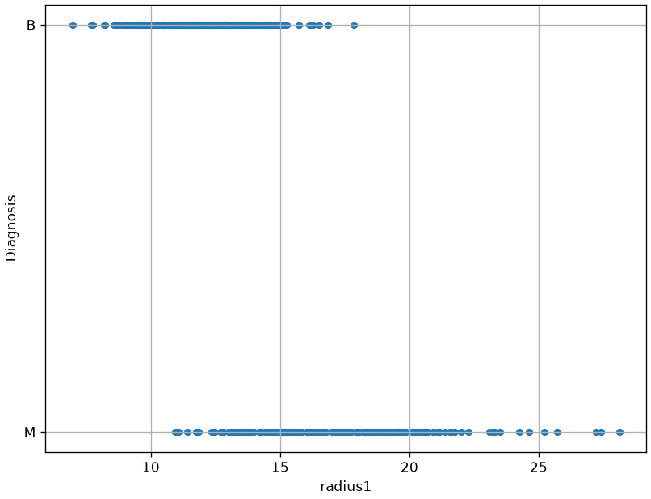
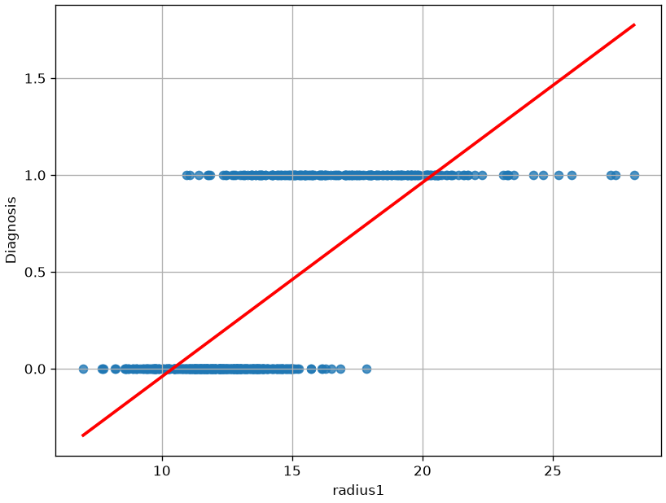
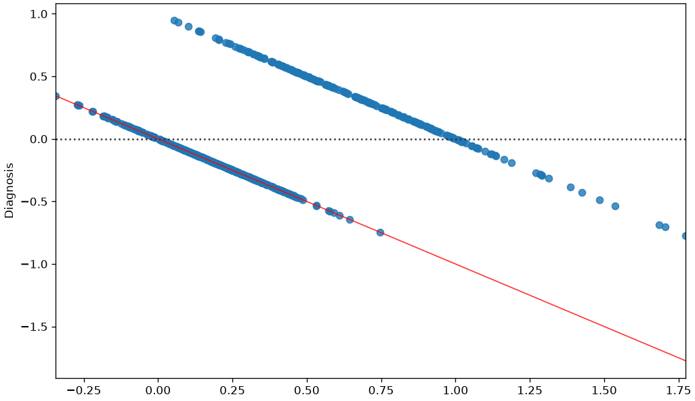
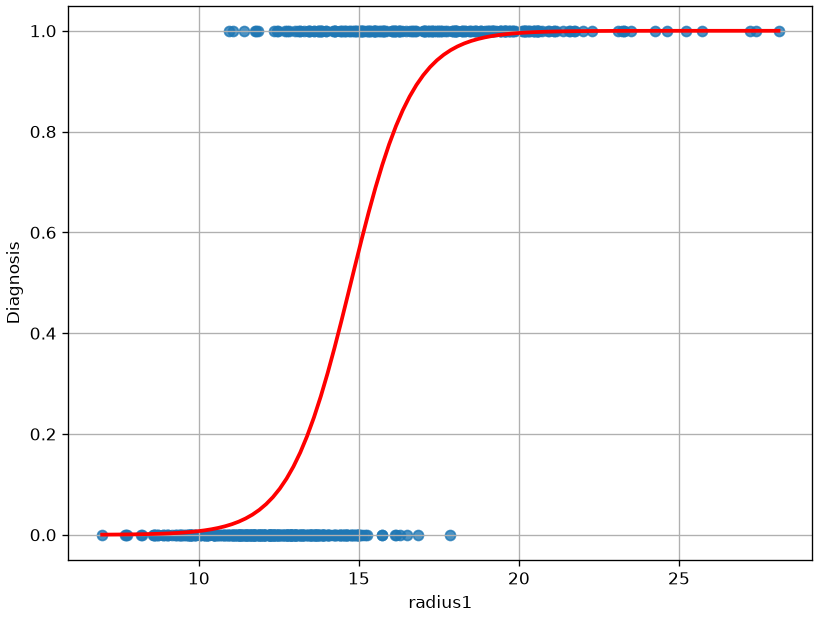
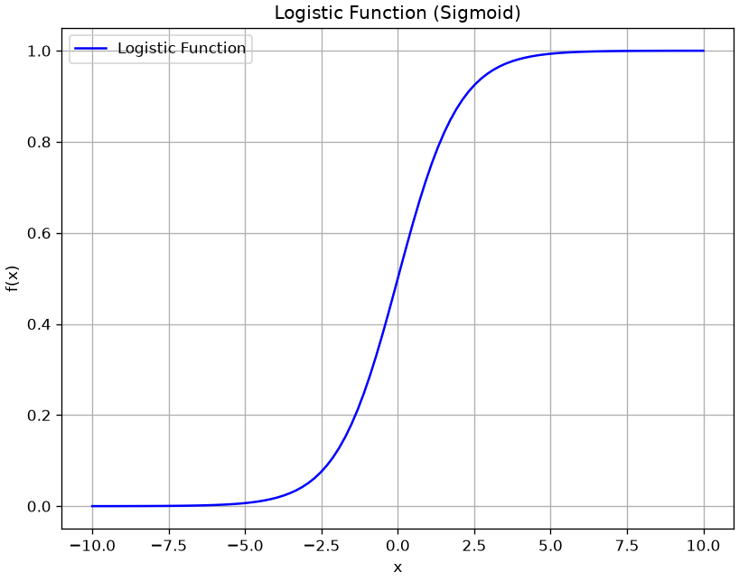

Parametric models are fast and compact - once we train them, we don’t need to save the training data and they can be used to classify new examples in a very natural way.
While linear regression is a powerful parametric models, it allows to model relationships between continuous independent and dependent variables and between qualitative independent variables and continuous variables. However, it does not allow to model relationships between continuous or qualitative independent variables and qualitative dependent variables.
Example Data
Establishing such relationships is useful in different contexts. For instance, let us consider the Breast Cancer Wisconsin dataset:
radius1
texture1
perimeter1
area1
smoothness1
compactness1
concavity1
concave_points1
symmetry1
fractal_dimension1
...
texture3
perimeter3
area3
smoothness3
compactness3
concavity3
concave_points3
symmetry3
fractal_dimension3
Diagnosis
0
17.99
10.38
122.80
1001.0
0.11840
0.27760
0.30010
0.14710
0.2419
0.07871
...
17.33
184.60
2019.0
0.16220
0.66560
0.7119
0.2654
0.4601
0.11890
M
1
20.57
17.77
132.90
1326.0
0.08474
0.07864
0.08690
0.07017
0.1812
0.05667
...
23.41
158.80
1956.0
0.12380
0.18660
0.2416
0.1860
0.2750
0.08902
M
2
19.69
21.25
130.00
1203.0
0.10960
0.15990
0.19740
0.12790
0.2069
0.05999
...
25.53
152.50
1709.0
0.14440
0.42450
0.4504
0.2430
0.3613
0.08758
M
3
11.42
20.38
77.58
386.1
0.14250
0.28390
0.24140
0.10520
0.2597
0.09744
...
26.50
98.87
567.7
0.20980
0.86630
0.6869
0.2575
0.6638
0.17300
M
4
20.29
14.34
135.10
1297.0
0.10030
0.13280
0.19800
0.10430
0.1809
0.05883
...
16.67
152.20
1575.0
0.13740
0.20500
0.4000
0.1625
0.2364
0.07678
M
...
...
...
...
...
...
...
...
...
...
...
...
...
...
...
...
...
...
...
...
...
...
564
21.56
22.39
142.00
1479.0
0.11100
0.11590
0.24390
0.13890
0.1726
0.05623
...
26.40
166.10
2027.0
0.14100
0.21130
0.4107
0.2216
0.2060
0.07115
M
565
20.13
28.25
131.20
1261.0
0.09780
0.10340
0.14400
0.09791
0.1752
0.05533
...
38.25
155.00
1731.0
0.11660
0.19220
0.3215
0.1628
0.2572
0.06637
M
566
16.60
28.08
108.30
858.1
0.08455
0.10230
0.09251
0.05302
0.1590
0.05648
...
34.12
126.70
1124.0
0.11390
0.30940
0.3403
0.1418
0.2218
0.07820
M
567
20.60
29.33
140.10
1265.0
0.11780
0.27700
0.35140
0.15200
0.2397
0.07016
...
39.42
184.60
1821.0
0.16500
0.86810
0.9387
0.2650
0.4087
0.12400
M
568
7.76
24.54
47.92
181.0
0.05263
0.04362
0.00000
0.00000
0.1587
0.05884
...
30.37
59.16
268.6
0.08996
0.06444
0.0000
0.0000
0.2871
0.07039
B
569 rows × 31 columns
The dataset contains several measurements of given quantities measured from digitized image of a fine needle aspirate (FNA) of a breast mass, together with a categorical variable Diagnosis with two levels: M (malignant) and B (benign).
In this case, it would be good to be able to study whether a relationship exists between some of the considered independent variables and the dependent variable or simply to classify an example in one of the two classes from new observation.
We will consider the radius1 variable for the moment. Let us plot this variable with respect to Diagnosis:

From the plot above, we can note that there is some form of relationship between the two variables. Indeed:
For low values of radius1, we tend to have more benign cases;
For large values of radius1, we tend to have more malignant cases.
Limits of Linear Regression
Of course, we would like to quantify this relationship in a more formal way. As in the case of a linear regressor, we want to define a model which can predict the independent variable y from the dependent variables x_i. If such model gives good predictions, than we can trust its interpretation as a means of studying the relationship between the variables.
We can think of converting B => 1 and M => 0, and then compute a linear regressor:
Diagnosis = \beta_0 + \beta_1 radius1
This would be the result:

We can immediately see that this function does not model the relationship between the two variables very well. While we obtain a statistically relevant regressor with R^2=0.533 and statistically relevant coefficients, the residual plot will look like this:

The correlation between the residuals and the independent variable is a strong indication that the true relationship between the two variables is not correctly modeled. After all, from a purely predictive point of view, we are using a linear regressor which takes the form:
f:\mathbb{R} \to \mathbb{R}
while the values Diagnosis variable belong to the set \{0,1\} and we would need instead a function with the following form:
f:\mathbb{R} \to \{0,1\}
However, the linear regressor cannot directly predict discrete values.
In practice, while with a linear regressor we wanted to predict continuous values, now we want to assign observations \mathbf{x} to discrete bins (in this case only two possible ones). As we will better study later in the course, this problem is known as classification.
From Binary Values to Probabilities
If we want to model some form of continuous value, we could think to transition from \{0,1\} to [0,1] using probabilities, which is a way to turn discretized values to “soft” values indicating our belief in the fact that Diagnosis will take either a 0 or 1 value. We could hence think to model the following probability, rather than modeling Diagnosis directly:
P(Diagnosis=1| radius1)
Note that modeling that probability directly is what discriminative models do.
Would not be appropriate. Indeed, while P(Diagnosis=1| radius1) needs to be in the [0,1] range, the linear combination \beta_0 + \beta_1 radius1 will naturally output values smaller than 0 and larger than 1. How should we interpret such values?
Intuitively, we would expect to P(Diagnosis=1| radius1) to assume values in the [0,1] range for intermediate values (say radius\in [10,20]), while for extremely low values of (say radius<10) the probability should saturate to 0 and for extremely large values (say radius>20) the probability should saturate to 1.
When radius1 takes large values (say larger than 20), we expect probability to saturate to 1.
In practice, we would expect a result similar to the following:

As can be noted, the function above is not linear, and hence it cannot be fit with a linear regressor. However, we have seen that a linear regressor can be tweaked to also represent nonlinear functions.
The Logistic Function
We need to find a transformation of the formulation of the linear regressor to transform its output into a nonlinear function of the independent variables. Of course, we do not want any transformation, but one that has the previously highlighted properties.
In practice the logistic function has some nice properties that, as we will se in a moment, allow to easily interpret the resulting model in a probabilistic way. The logistic function is defined as:
f(x) = \frac{1}{1+e^{-x}}
and has the following shape:

As we can see, the function has the properties we need:
Its values are comprised between 0 and 1;
It saturates to 0 and 1 for extreme values of x.
Additionally, it is differentiable, which will be useful for optimization later.
The Logistic Regression Model
In practice, we define our model, the logistic regressor model as follows (simple logistic regression):
The term on the right is called the odd of P(y=1|\mathbf{x}).
The odd of P(y=1|\mathbf{x}) is the number of times we believe the example will be positive (observed \mathbf{x}) over the number of times we believe the example will be negative.
For instance, if we believe that the example will be positive 3 times out of 10, then the odd will be \frac{3}{7}.
Is the logarithm of the odd (log odd), and it is called logit, hence the logistic regression is sometimes called logit regression.
The expression above shows how a logistic regressor can be seen as a linear regressor (the expression on the right side of the equation) on the logit (the log odd). This paves the way to useful interpretations of the model, as shown in the next section.
Estimation of the Parameters of a Logistic Regressor
To fit the model and find suitable values for the \mathbf{\beta_i} parameters, we will define a cost function, similarly to what we have done in the case of linear regression.
Even if we can see the logistic regression problem as the linear regression problem of fitting the logit(p) = \mathbf{\beta}^{T}\mathbf{x} function, differently from linear regression, we should note that we do not have the ground truth probabilities p. Indeed, our observations only provide input examples \mathbf{x}^{(i)} and the corresponding labels y^{(i)}.
Indeed, when y = 1, the second factor is equal to 1 and the expression reduces to P\left( y = 1 \middle| \mathbf{x};\mathbf{\beta} \right) = f_{\mathbf{\beta}}(\mathbf{x}). Similarly, if y = 0, the first factor is equal to 1 and the expression reduces to 1 - f_{\mathbf{\beta}}(x).
We can estimate the parameters by maximum likelihood, i.e., choosing the values of the parameters which maximize the probability of the data under the model identified by the parameters \mathbf{\beta}:
Similarly to linear regression, we now have a cost function to minimize in order to find the values of the \beta_i parameters. Unfortunately, in this case, J(\mathbf{\beta}) assumes a nonlinear form which prevents us to use the least square principles and there is no closed form solution for the parameter estimation. In these cases, parameters can be estimated using some form of iterative solver, which begins with an initial guess for the parameters and iteratively refine them to find the final solution. Luckily, the logistic regression cost function is convex, and hence only a single solution is admitted, independently from the initial guess.
Different iterative solvers can be used in practice. The most commonly used is the gradient descent algorithm, which requires the cost function to be differentiable.
Visualizing the Cost Function (The “Loss Landscape”)
We have just derived the cost function J(\mathbf{\beta}), also known as Log-Loss or Binary Cross-Entropy.
You were told that this function is convex, which guarantees a single global minimum. But what does that actually look like?
Let’s visualize it. We will build a simple model Diagnosis ~ radius1, which has two parameters: \beta_0 (intercept) and \beta_1 (slope). We will then plot the Cost J for every possible combination of \beta_0 and \beta_1. We are looking for a “bowl” shape.
import pandas as pdimport numpy as npimport matplotlib.pyplot as pltimport seaborn as snsfrom sklearn.preprocessing import StandardScalerfrom mpl_toolkits.mplot3d import Axes3D # Moved import to top# --- 1. Load and Prepare Data ---data = pd.read_csv(DATA +"breast_cancer_wisconsin.csv")# Map Diagnosis to 0 (Benign) and 1 (Malignant)data['Diagnosis'] = data['Diagnosis'].replace({'B':0,'M':1})# Extract our 1D feature and targetX = data[['radius1']].valuesy = data['Diagnosis'].values# --- 2. CRITICAL STEP: Scale the Feature ---# This is vital for visualization. Without it, the "bowl"# will be extremely stretched and impossible to see.scaler = StandardScaler()X_scaled = scaler.fit_transform(X)def compute_cost(X, y, beta_0, beta_1):""" Calculates the total log-loss for a given beta_0 and beta_1. """# 1. Calculate the linear part (z)# --- THIS IS THE FIX ---# We .flatten() X to make it (n,) to match y's shape (n,) z = beta_0 + (X.flatten() * beta_1)# ----------------------# 2. Apply the sigmoid function to get probabilities (p_hat) p_hat =1/ (1+ np.exp(-z)) # p_hat is now shape (n,)# --- Numerical Stability ---# We must "clip" values to prevent log(0) or log(1-1), # which would result in -inf. epsilon =1e-10 p_hat = np.clip(p_hat, epsilon, 1- epsilon)# -------------------------# 3. Calculate the log-loss for each sample# y (n,) and p_hat (n,) will now multiply element-wise cost_per_sample =-(y * np.log(p_hat) + (1- y) * np.log(1- p_hat))# 4. Return the *total* cost for the whole datasetreturn np.sum(cost_per_sample)# 1. Create ranges for Beta 0 (intercept) and Beta 1 (slope)beta_0_range = np.linspace(-5, 5, 100)# --- UPDATED as requested ---beta_1_range = np.linspace(-2, 14, 100)# --------------------------# 2. Create the 2D gridB0, B1 = np.meshgrid(beta_0_range, beta_1_range)costs = np.zeros_like(B0)# 3. Calculate the cost for every point on the gridfor i inrange(B0.shape[0]):for j inrange(B0.shape[1]): costs[i, j] = compute_cost(X_scaled, y, B0[i, j], B1[i, j])# Find the minimum for plottingmin_cost_idx = np.unravel_index(np.argmin(costs), costs.shape)best_b0 = B0[min_cost_idx]best_b1 = B1[min_cost_idx]min_cost = costs[min_cost_idx]# --- Create the Plot ---fig = plt.figure(figsize=(18, 7))# --- Subplot 1: 3D Surface Plot ---ax1 = fig.add_subplot(1, 2, 1, projection='3d')ax1.plot_surface(B0, B1, costs, cmap='viridis', alpha=0.8)# --- UPDATED to show both optimal parameters ---ax1.scatter(best_b0, best_b1, min_cost, color='red', s=200, edgecolor='black', label=f'Global Minimum (β0={best_b0:.2f}, β1={best_b1:.2f})')# ---------------------------------------------ax1.set_xlabel('Intercept (β0)')ax1.set_ylabel('Slope (β1)')ax1.set_zlabel('Cost J(β) (Log-Loss)')ax1.set_title('3D Loss Landscape')ax1.view_init(elev=20, azim=135) # Adjust angleax1.legend()# --- Subplot 2: 2D Contour Plot ---ax2 = fig.add_subplot(1, 2, 2)contours = ax2.contour(B0, B1, costs, levels=50, cmap='viridis')plt.clabel(contours, inline=True, fontsize=8)# --- UPDATED to show both optimal parameters ---ax2.plot(best_b0, best_b1, 'ro', markersize=10, label=f'Global Minimum (β0={best_b0:.2f}, β1={best_b1:.2f})')# ---------------------------------------------ax2.set_xlabel('Intercept (β0)')ax2.set_ylabel('Slope (β1)')ax2.set_title('2D Contour Plot of Loss')ax2.axhline(0, color='k', ls='--', lw=0.5)ax2.axvline(0, color='k', ls='--', lw=0.5)ax2.legend()ax2.grid(True, linestyle='--', alpha=0.5)plt.show()print(f"Optimal parameters:")print(f" β0 (Intercept): {best_b0:.4f}")print(f" β1 (Slope): {best_b1:.4f}")print(f" Minimum Cost (Log-Loss): {min_cost:.4f}")
The plots clearly show a single, smooth, convex “bowl”.
There are no “local minima” or “bumpy” areas for an optimizer to get stuck in.
This is why we were told the logistic regression cost function is convex.
The red dot at the very bottom of this bowl represents the one optimal set of parameters (\beta_0, \beta_1) that minimizes the cost.
An iterative solver like Gradient Descent is guaranteed to find this minimum, just like a marble released from anywhere on the bowl’s rim is guaranteed to roll to the bottom.
Statistical Interpretation of the Coefficients of a Logistic Regressor
Let’s now see how to interpret the coefficients of a logistic regressor.
Interpretation of the intercept \beta_0
Remember that the regression model (in the case of simple logistic regression) is as follows:
\log(\frac{p}{1-p})=\beta_0 + \beta_1 x
Applying what we know about logistic regressors, we can write:
x=0 \Rightarrow \log \frac{p}{1-p}={\beta}_0
To have a clearer picture, we can exponentiate both sides of the equation and write:
x=0 \Rightarrow \frac{p}{1-p}=e^{\beta_0}
Remember that \frac{p}{1-p} is the odd that the dependent variable is equal to 1 when observing x and, as such, it has a clear interpretation. For example, if the odds of an event are \frac{3}{1}, then it is 3 times more likely to occur than not to occur. So, for x=0, it is e^{\beta_0} times more likely that the dependent variable is equal to 1, rather than being equal to 0.
e^{\beta_0} is the odd of y being equal to 1 rather than 0 when x_i=0, \ \forall i;
An increment of one unit in the independent variable x_i corresponds to a multiplicative increment of e^{\beta_i} in the odds of y=1. So if e^{\beta_i}=0.05, then y=1 is 5\% more likely for a one-unit increment of x.
Example of Logistic Regression
Let us now apply logistic regression to a larger set of variables in our regression problem. We will consider the following independent variables:
radius1
texture1
perimeter1
area1
smoothness1
compactness1
concavity1
symmetry1
The dependent variable is again Diagnosis.
Once fit to the data, we will obtain the following parameters:
R^2
Adj. R^2
F-statistic
Prob(F-statistic)
Log-Likelihood
0.670
0.666
142.4
1.16e-129
-78.055
All values have interpretations similar to the ones obtained in the case of linear regression. The Log-Likelihood reports the value of the logarithm of the likelihood which was used to train the data.
The estimates for the coefficients are as follows:
We notice that not all variables have a statistically relevant relationship with the dependent variable. Applying backward elimination, we remove compactness1 and obtain the following estimates:
These are now all statistically relevant. For instance, we can see that:
When all variables are set to zero, the odds of the benign tumor are e^{-2.6708} \approx 0.07, or \frac{7}{100}. This is a base value.
An increment in one unit of texture1 increments the odds of a benign tumor multiplicatively by a factor of e^{0.0219} \approx 1.02 (a +2\%), when all other variables are constant.
An increment of one unit of perimeter1 decrements the odds of benign tumor multiplicatively by a factor of e^{-0.0419} \approx 0.96 (a -4\%), when all other variables are constant.
Evaluating the Logistic Regression Model
The statsmodels summary table gives us a lot of information, including a value for R-squared. It’s critical to understand that this is NOT the same R^2 we used in linear regression.
The Problem: We Can’t Use R^2
In OLS (Linear Regression), R^2 = 1 - \frac{RSS}{TSS}. This metric is based on minimizing the sum of squared residuals (RSS).
In Logistic Regression, our model does not predict a continuous value. It predicts a probability. We don’t minimize squared residuals; we minimize the negative log-likelihood (also called Cross-Entropy Loss).
Because the underlying cost function is different, the R^2 metric is not mathematically valid. A model that predicts a probability of 0.9 for an event that happens (y=1) is a fantastic prediction, but it would have a “residual” of (1 - 0.9) = 0.1, which OLS would want to square and “punish.” This doesn’t make sense.
The Solution: “Pseudo R^2”
To get a similar “0-to-1” metric for goodness-of-fit, statisticians have developed several “Pseudo R^2” measures. The one statsmodels reports by default is McFadden’s R^2.
The logic is the same as OLS R^2: “How much better is our model than a ‘dumb’ baseline?”
In OLS: We compared our model’s error (RSS) to the baseline’s error (TSS).
In Logistic Regression: We compare our model’s Log-Likelihood to a baseline model’s Log-Likelihood.
Baseline Model (Log-Likelihood Null, LL_{Null}): A “dumb” model that only knows the prior (e.g., P(y=1) = 0.35). This is an “intercept-only” model. statsmodels calculates this for you.
Our “Full” Model (Log-Likelihood, LL_{Model}): This is the log-likelihood of our fitted model. It will be a “less negative” (better) number than LL_{Null}.
McFadden’s R^2 is then defined as:
R^2_{McFadden} = 1 - \frac{LL_{Model}}{LL_{Null}}
Interpretation:
LL_{Model} is the value reported as “Log-Likelihood” in your summary table.
LL_{Null} is reported as “LL-Null”.
Pseudo R-sq.: This is the R^2_{McFadden} score.
Consider the following example:
Log-Likelihood: -105.19 (LL_{Model})
LL-Null: -452.39 (LL_{Null})
Pseudo R-sq.: 0.77
This 0.77 was calculated as 1 - (\frac{-105.19}{-452.39}) \approx 0.77.
It is interpreted similarly to R^2: “Our model’s features explain about 77% of the ‘deviance’ (uncertainty) in the outcome, compared to a model that just guesses the average.”
Important: You cannot compare a Pseudo R-sq. from logistic regression to an R^2 from OLS. They are not equivalent. It is only useful for comparing nested logistic regression models (like we do in backward elimination).
Predictive Evaluation
When we use the model in a purely predictive way, we can also use all evaluation measures we have seen for predictive analysis, such as accuracy, precision, recall, F1, confusion matrix etc.
Logistic Regression in Python
Let’s look at an example of logistic regression in Python. We will use the R dataset biopsy. We can load it using statsmodels:
from statsmodels.datasets import get_rdatasetbiopsy = get_rdataset('biopsy',package='MASS')print(biopsy.__doc__)
====== ===============
biopsy R Documentation
====== ===============
Biopsy Data on Breast Cancer Patients
-------------------------------------
Description
~~~~~~~~~~~
This breast cancer database was obtained from the University of
Wisconsin Hospitals, Madison from Dr. William H. Wolberg. He assessed
biopsies of breast tumours for 699 patients up to 15 July 1992; each of
nine attributes has been scored on a scale of 1 to 10, and the outcome
is also known. There are 699 rows and 11 columns.
Usage
~~~~~
.. code:: R
biopsy
Format
~~~~~~
This data frame contains the following columns:
``ID``
sample code number (not unique).
``V1``
clump thickness.
``V2``
uniformity of cell size.
``V3``
uniformity of cell shape.
``V4``
marginal adhesion.
``V5``
single epithelial cell size.
``V6``
bare nuclei (16 values are missing).
``V7``
bland chromatin.
``V8``
normal nucleoli.
``V9``
mitoses.
``class``
``"benign"`` or ``"malignant"``.
Source
~~~~~~
P. M. Murphy and D. W. Aha (1992). UCI Repository of machine learning
databases. [Machine-readable data repository]. Irvine, CA: University of
California, Department of Information and Computer Science.
O. L. Mangasarian and W. H. Wolberg (1990) Cancer diagnosis via linear
programming. *SIAM News* **23**, pp 1 & 18.
William H. Wolberg and O.L. Mangasarian (1990) Multisurface method of
pattern separation for medical diagnosis applied to breast cytology.
*Proceedings of the National Academy of Sciences, U.S.A.* **87**, pp.
9193–9196.
O. L. Mangasarian, R. Setiono and W.H. Wolberg (1990) Pattern
recognition via linear programming: Theory and application to medical
diagnosis. In *Large-scale Numerical Optimization* eds Thomas F. Coleman
and Yuying Li, SIAM Publications, Philadelphia, pp 22–30.
K. P. Bennett and O. L. Mangasarian (1992) Robust linear programming
discrimination of two linearly inseparable sets. *Optimization Methods
and Software* **1**, pp. 23–34 (Gordon & Breach Science Publishers).
References
~~~~~~~~~~
Venables, W. N. and Ripley, B. D. (2002) *Modern Applied Statistics with
S-PLUS.* Fourth Edition. Springer.
The dataset contains 699 observations and 11 columns. Each observation contains measurements of 9 quantities relating to tissue samples that can be “benign” or “malignant” tumors. Let’s start by manipulating the data a bit. We visualize the values of the class variable:
biopsy.data['class'].unique()
array(['benign', 'malignant'], dtype=object)
To calculate the logistic regression model using statsmodels, it is necessary to convert these values into integers (0 or 1). Furthermore, it is advisable to avoid calling the column class as this is a reserved word for statsmodels. We build a new column cl that contains the modified class values:
Optimization terminated successfully.
Current function value: 0.075321
Iterations 10
Logit Regression Results
Dep. Variable:
cl
No. Observations:
683
Model:
Logit
Df Residuals:
673
Method:
MLE
Df Model:
9
Date:
Tue, 15 Sep 2026
Pseudo R-squ.:
0.8837
Time:
19:40:30
Log-Likelihood:
-51.444
converged:
True
LL-Null:
-442.18
Covariance Type:
nonrobust
LLR p-value:
2.077e-162
coef
std err
z
P>|z|
[0.025
0.975]
Intercept
-10.1039
1.175
-8.600
0.000
-12.407
-7.801
V1
0.5350
0.142
3.767
0.000
0.257
0.813
V2
-0.0063
0.209
-0.030
0.976
-0.416
0.404
V3
0.3227
0.231
1.399
0.162
-0.129
0.775
V4
0.3306
0.123
2.678
0.007
0.089
0.573
V5
0.0966
0.157
0.617
0.537
-0.210
0.404
V6
0.3830
0.094
4.082
0.000
0.199
0.567
V7
0.4472
0.171
2.609
0.009
0.111
0.783
V8
0.2130
0.113
1.887
0.059
-0.008
0.434
V9
0.5348
0.329
1.627
0.104
-0.110
1.179
The logistic regressor explains the relationship between variables well (R^2 high) and is significant (p-value almost zero). Some coefficients have a high p-value. Let’s start by eliminating the variable V2, which has the highest p-value:
The near-zero value of the exponential of the intercept indicates that, when all variables take zero values, the odds are very low. This suggests that p is low, while 1-p is very high. The probability of having a malignant tumor is therefore very low if all variables take zero values;
An increase of one unit in the value of V1 corresponds to an increase of approximately 86\% in the odds, making the possibility of a malignant tumor higher;
An increase of one unit in the value of V3 corresponds to an increase of approximately 41\% in the odds;
An increase of one unit in the value of V4 corresponds to an increase of approximately 40\% in the odds;
An increase of one unit in the value of V6 corresponds to an increase of approximately 46\% in the odds;
An increase of one unit in the value of V7 corresponds to an increase of approximately 60\% in the odds;
An increase of one unit in the value of V8 corresponds to an increase of approximately 27\% in the odds;
The increase of variables generally causes an increase in the odds. Therefore, we expect the values of the variables to be small in the presence of benign tumors.
Exercises
Read the coefficients. Fit a logistic regression of Survived on Sex and Pclass. Convert each coefficient into an odds ratio, and write one sentence per coefficient in the language of the problem — no statistical vocabulary.
Odds, log-odds, probability. For a female passenger in second class, compute the predicted log-odds, the odds and the probability by hand from the coefficients, then check against predict. Which of the three is linear in the predictors?
A continuous predictor. Add Age to the model. Is its coefficient significant? Compute how much the predicted probability changes between a 20-year-old and a 40-year-old, all else equal — and note that the answer depends on what “all else” is.
Confounding, again. Fit Survived ~ Age alone, then Survived ~ Age + Pclass. Does the age coefficient change? Relate what you see to chapter 11.
Where the linear model shows. Plot the predicted probability of survival against age for each class. Why are the three curves parallel on the log-odds scale but not on the probability scale?
References
Chapter 4 of [1]
[1] James, Gareth Gareth Michael. An introduction to statistical learning: with applications in Python, 2023.https://www.statlearning.com
Source Code
---title: "Logistic regression"stem: 09_logistic_regressionchapter: 9format: html: code-tools: true ipynb: default---::: {.callout-tip icon=false}## Chapter resources[Slides (PDF)](../files/slides/09_logistic_regression.pdf){.btn .btn-sm .btn-primary}[Open in Colab](https://colab.research.google.com/github/antoninofurnari/fad-2627/blob/main/notes/09_logistic_regression.ipynb){.btn .btn-sm .btn-outline-primary}[Download PDF](../files/chapters/09_logistic_regression.pdf){.btn .btn-sm .btn-outline-primary .btn-chapter-pdf}[Practice quiz](../quiz.html?bank=09){.btn .btn-sm .btn-outline-primary}:::```{python}#| echo: false# Datasets are served by the site itself, so the same code runs here, on a# local clone and on Colab. See site/data/MANIFEST.yml.from pathlib import PathDATA ="../data/"if Path("../data").is_dir() else"https://antoninofurnari.github.io/fad-2627/data/"```We have seen how K-NN allows to perform classification in a **non-parametric way**. However, it has some short-comings:- It doesn't work with many features;- It requires memorization of the training set;- Each classification requires a search of the K-nearest neighbors in the training set.Compare this to a parametric predictive model such as the linear regression:$$f(\mathbf{x}) = \beta_0 + \beta_1 x_1 + \ldots + \beta_n x_n$$Parametric models are fast and compact - once we train them, we don't need to save the training data and they can be used to classify new examples in a very natural way.While linear regression is a powerful parametric models, it allows to model relationships between **continuous independent and dependent variables** and **between qualitative independent variables and continuous variables**. However, it does not allow to model relationships between continuous or qualitative independent variables and **qualitative dependent variables**.## Example DataEstablishing such relationships is useful in different contexts. For instance, let us consider the [Breast Cancer Wisconsin](https://archive.ics.uci.edu/dataset/17/breast+cancer+wisconsin+diagnostic) dataset:```{python}#| echo: falseimport pandas as pdfrom matplotlib import pyplot as pltdata = pd.read_csv(DATA +"breast_cancer_wisconsin.csv")data```The dataset contains several measurements of given quantities measured from digitized image of a fine needle aspirate (FNA) of a breast mass, together with a categorical variable `Diagnosis` with two levels: `M` (malignant) and `B` (benign).In this case, it would be good to be able to study whether a relationship exists between some of the considered independent variables and the dependent variable or simply to classify an example in one of the two classes from new observation.We will consider the `radius1` variable for the moment. Let us plot this variable with respect to `Diagnosis`:```{python}#| echo: falsedata.plot.scatter(x='radius1',y='Diagnosis', figsize=(8,6))plt.grid()plt.show()```From the plot above, we can note that there is some form of relationship between the two variables. Indeed:* For low values of `radius1`, we tend to have more benign cases;* For large values of `radius1`, we tend to have more malignant cases.## Limits of Linear RegressionOf course, we would like to quantify this relationship in a more formal way.**As in the case of a linear regressor, we want to define a model which can predict the independent variable $y$ from the dependent variables $x_i$. If such model gives good predictions, than we can trust its interpretation as a means of studying the relationship between the variables.**We can think of converting `B => 1` and `M => 0`, and then compute a linear regressor:$$Diagnosis = \beta_0 + \beta_1 radius1$$This would be the result:```{python}#| echo: falseimport seaborn as snsdata['Diagnosis']=data['Diagnosis'].replace({'B':0,'M':1})plt.figure(figsize=(8,6))sns.regplot(x=data['radius1'],y=data['Diagnosis'], ci=None, line_kws={'color':'red'})plt.grid()plt.show()```We can immediately see that this function does not model the relationship between the two variables very well. While we obtain a statistically relevant regressor with $R^2=0.533$ and statistically relevant coefficients, the residual plot will look like this:```{python}#| echo: falsefrom statsmodels.formula.api import olsimport statsmodels.api as sm#ols("Diagnosis ~ radius1", data).fit().summary()fitted=ols("Diagnosis ~ radius1", data).fit().fittedvaluesplt.figure(figsize=(10,6))sns.residplot(x=fitted, y='Diagnosis', data=data.dropna(),lowess=True,line_kws={'color': 'red', 'lw': 1, 'alpha': 0.8})plt.show()```The correlation between the residuals and the independent variable is a strong indication that the true relationship between the two variables is not correctly modeled. After all, from a purely predictive point of view, we are using a linear regressor which takes the form:$$f:\mathbb{R} \to \mathbb{R}$$while the values `Diagnosis` variable belong to the set $\{0,1\}$ and we would need instead a function with the following form:$$f:\mathbb{R} \to \{0,1\}$$However, the linear regressor cannot directly predict **discrete values**. **In practice, while with a linear regressor we wanted to predict continuous values, now we want to assign observations $\mathbf{x}$ to discrete bins (in this case only two possible ones). As we will better study later in the course, this problem is known as classification.**## From Binary Values to ProbabilitiesIf we want to model some form of continuous value, we could think to transition from $\{0,1\}$ to $[0,1]$ using probabilities, which is a way to turn discretized values to "soft" values indicating our belief in the fact that `Diagnosis` will take either a $0$ or $1$ value. We could hence think to model the following probability, rather than modeling `Diagnosis` directly:$$P(Diagnosis=1| radius1)$$Note that modeling that probability directly is what **discriminative models do**.However, even in this case, a model of the form:$$P(Diagnosis=1|radius1) = \beta_0 + \beta_1 radius1$$Would not be appropriate. Indeed, while $P(Diagnosis=1| radius1)$ needs to be in the $[0,1]$ range, the linear combination $\beta_0 + \beta_1 radius1$ will naturally output values **smaller than $0$** and **larger than $1$**. How should we interpret such values?Intuitively, we would expect to $P(Diagnosis=1| radius1)$ to assume values in the $[0,1]$ range for intermediate values (say `radius` $\in [10,20]$), while for extremely low values of (say `radius` $<10$) the probability **should saturate to $0$** and for extremely large values (say `radius` $>20$) the probability should saturate to 1.When `radius1` takes large values (say larger than $20$), we expect **probability to saturate to $1$**.In practice, we would expect a result similar to the following:```{python}#| echo: falseplt.figure(figsize=(8,6))sns.regplot(x=data['radius1'],y=data['Diagnosis'], logistic=True, ci=None, line_kws={'color':'red'})plt.grid()plt.show()```As can be noted, the function above is not linear, and hence it cannot be fit with a linear regressor. However, we have seen that a linear regressor can be tweaked to also represent nonlinear functions.## The Logistic FunctionWe need to find a **transformation of the formulation of the linear regressor to transform its output into a nonlinear function of the independent variables**. Of course, we do not want *any* transformation, but one that has the previously highlighted properties. In practice the **logistic function has some nice properties that, as we will se in a moment, allow to easily interpret the resulting model in a probabilistic way**. The logistic function is defined as:$$f(x) = \frac{1}{1+e^{-x}}$$and has the following shape:```{python}#| echo: falseimport numpy as npimport matplotlib.pyplot as plt# Define the logistic (sigmoid) functiondef logistic_function(x):return1/ (1+ np.exp(-x))# Generate x valuesx = np.linspace(-10, 10, 100) # Creating 100 evenly spaced values from -6 to 6# Calculate y values using the logistic functiony = logistic_function(x)# Plot the logistic functionplt.figure(figsize=(8, 6))plt.plot(x, y, label='Logistic Function', color='blue')plt.xlabel('x')plt.ylabel('f(x)')plt.title('Logistic Function (Sigmoid)')plt.grid()plt.legend()plt.show()```As we can see, the function has the properties we need:* Its values are comprised between $0$ and $1$;* It saturates to $0$ and $1$ for extreme values of $x$.Additionally, it is differentiable, which will be useful for optimization later.## The Logistic Regression ModelIn practice, we define our model, **the logistic regressor model** as follows (**simple logistic regression**):$$P(Diagnosis=1|X) = f(\beta_0 + \beta_1 X) = \frac{1}{1+e^{-(\beta_0 + \beta_1 X)}}$$Or, more in general (**multiple logistic regression**):$$P(y=1|\mathbf{x}) = \frac{1}{1+e^{-(\beta_0 + \beta_1 x_1 + \ldots + \beta_n x_n)}}$$It is easy to see that:$$p=\frac{1}{1+e^{-x}} \Rightarrow p+pe^{-x} = 1 \Rightarrow pe^{-x} = 1-p \Rightarrow e^{-x} = \frac{1-p}{p} \Rightarrow e^{x} = \frac{p}{1-p}$$Hence:$$e^{\beta_0+\beta_1x_1 + \ldots + \beta_nx_n} = \frac{P(y=1|\mathbf{x})}{1-P(y=1|\mathbf{x})}$$The term on the right is called the odd of $P(y=1|\mathbf{x})$. The odd of $P(y=1|\mathbf{x})$ is the number of times we believe the example will be positive (observed $\mathbf{x}$) over the number of times we believe the example will be negative. For instance, if we believe that the example will be positive $3$ times out of $10$, then the odd will be $\frac{3}{7}$.By taking the logarithm of both terms, we obtain:$$\log \left(\frac{P(y=1|\mathbf{x})}{1-P(y=1|\mathbf{x})}\right) = \beta_0 + \beta_1 x_1 + \ldots + \beta_n x_n$$The expression:$$\log \left(\frac{P(y=1|\mathbf{x})}{1-P(y=1|\mathbf{x})}\right)$$Is the logarithm of the odd (log odd), and it is called **logit**, hence the **logistic regression** is sometimes called **logit regression**.The expression above shows how a logistic regressor can be seen as **a linear regressor (the expression on the right side of the equation) on the logit (the log odd)**. This paves the way to useful interpretations of the model, as shown in the next section.## Estimation of the Parameters of a Logistic RegressorTo fit the model and find suitable values for the $\mathbf{\beta_i}$parameters, we will define a **cost function**, similarly to what we havedone in the case of linear regression. Even if we can see the logisticregression problem as the linear regression problem of fitting the$logit(p) = \mathbf{\beta}^{T}\mathbf{x}$ function, differently fromlinear regression, **we should note that we do not have the ground truth probabilities p**. Indeed, our observations only provide input examples$\mathbf{x}^{(i)}$ and the corresponding labels $y^{(i)}$.Starting from the definition:$$P\left( y = 1 \middle| \mathbf{x}; \mathbf{\beta} \right) = f_{\mathbf{\beta}}\left( \mathbf{x} \right) = \frac{1}{1 + e^{- \mathbf{\beta}^{T}\mathbf{x}}} = \sigma(\mathbf{\beta}^{T}\mathbf{x})$$We can write:$$P\left( y = 1 \middle| \mathbf{x};\mathbf{\beta} \right) = f_{\mathbf{\beta}}(\mathbf{x})$$$$P\left( y = 0 \middle| \mathbf{x};\mathbf{\beta} \right) = 1 - f_{\mathbf{\beta}}(\mathbf{x})$$Since $y$ can only take values $0$ and $1$, this can also be written as follows in a more compact form:$$P\left( y \middle| \mathbf{x};\mathbf{\beta} \right) = \left( f_{\mathbf{\beta}}\left( \mathbf{x} \right) \right)^{y}\left( 1 - f_{\mathbf{\beta}}\left( \mathbf{x} \right) \right)^{1 - y}$$Indeed, when $y = 1$, the second factor is equal to $1$ and theexpression reduces to$P\left( y = 1 \middle| \mathbf{x};\mathbf{\beta} \right) = f_{\mathbf{\beta}}(\mathbf{x})$.Similarly, if $y = 0$, the first factor is equal to $1$ and theexpression reduces to $1 - f_{\mathbf{\beta}}(x)$.We can estimate the parameters by maximum likelihood, i.e., choosing thevalues of the parameters which maximize the probability of the dataunder the model identified by the parameters $\mathbf{\beta}$:$$L\left( \mathbf{\beta} \right) = P(Y|X;\mathbf{\beta})$$If we assume that the training examples are all independent, thelikelihood can be expressed as:$$L\left( \mathbf{\beta} \right) = \prod_{i = 1}^{N}{P(y^{(i)}|\mathbf{x}^{(i)};\mathbf{\beta})} = \prod_{i = 1}^{N}{f_{\mathbf{\beta}}\left( \mathbf{x}^{(i)} \right)^{y^{(i)}}\left( 1 - f_{\mathbf{\beta}}\left( \mathbf{x}^{(i)} \right) \right)^{{1 - y}^{(i)}}}$$Maximizing this expression is equivalent to minimizing the negativelogarithm of $L(\mathbf{\beta})$ (negative log-likelihood - nll):$$nll\left( \mathbf{\beta} \right) = - \log{L\left( \mathbf{\beta} \right)} = - \sum_{i = 1}^{N}{\log\left\lbrack f_{\mathbf{\beta}}\left( \mathbf{x}^{(i)} \right)^{y^{(i)}}\left( 1 - f_{\mathbf{\beta}}\left( \mathbf{x}^{(i)} \right) \right)^{{1 - y}^{(i)}} \right\rbrack} =$$$$= - \sum_{i = 1}^{N}{\lbrack y^{(i)}\log{f_{\mathbf{\beta}}\left( \mathbf{x}^{(i)} \right)}} + \left( 1 - y^{(i)} \right)\log{(1 - f_{\mathbf{\beta}}\left( \mathbf{x}^{(i)} \right)})\rbrack$$Hence, we will define our cost function as:$$J\left( \mathbf{\beta} \right) = - \sum_{i = 1}^{N}{\lbrack y^{(i)}\log{f_{\mathbf{\beta}}\left( \mathbf{x}^{(i)} \right)}} + \left( 1 - y^{(i)} \right)\log{(1 - f_{\mathbf{\beta}}\left( \mathbf{x}^{(i)} \right)})\rbrack$$This can be rewritten more explicitly in terms of the $\mathbf{\beta}$parameters as follows:$$J\left( \mathbf{\beta} \right) = - \sum_{i = 1}^{N}{\lbrack y^{(i)}\log{\sigma\left( {\mathbf{\beta}^{T}\mathbf{x}}^{(i)} \right)}} + \left( 1 - y^{(i)} \right)\log{(1 - \sigma\left( \mathbf{\beta}^{T}\mathbf{x}^{(i)} \right)})\rbrack$$Similarly to linear regression, we now have a cost function to minimize in order to find the values of the $\beta_i$ parameters. Unfortunately, in this case, $J(\mathbf{\beta})$ assumes a nonlinear form **which prevents us to use the least square principles** and **there is no closed form solution for the parameter estimation**. In these cases, parameters can be estimated using some form of **iterative solver**, which begins with an initial guess for the parameters and iteratively refine them to find the final solution. Luckily, the logistic regression cost function **is convex, and hence only a single solution is admitted, independently from the initial guess**.Different iterative solvers can be used in practice. The most commonly used is the **gradient descent algorithm**, which requires the cost function to be differentiable.### Visualizing the Cost Function (The "Loss Landscape")We have just derived the cost function $J(\mathbf{\beta})$, also known as **Log-Loss** or **Binary Cross-Entropy**.$$J\left( \mathbf{\beta} \right) = - \sum_{i = 1}^{N}{\lbrack y^{(i)}\log{\sigma\left( {\mathbf{\beta}^{T}\mathbf{x}}^{(i)} \right)}} + \left( 1 - y^{(i)} \right)\log{(1 - \sigma\left( \mathbf{\beta}^{T}\mathbf{x}^{(i)} \right)})\rbrack$$You were told that this function is **convex**, which guarantees a single global minimum. But what does that actually *look like*?Let's visualize it. We will build a simple model `Diagnosis ~ radius1`, which has two parameters: $\beta_0$ (intercept) and $\beta_1$ (slope). We will then plot the Cost $J$ for every possible combination of $\beta_0$ and $\beta_1$. We are looking for a "bowl" shape.```{python}import pandas as pdimport numpy as npimport matplotlib.pyplot as pltimport seaborn as snsfrom sklearn.preprocessing import StandardScalerfrom mpl_toolkits.mplot3d import Axes3D # Moved import to top# --- 1. Load and Prepare Data ---data = pd.read_csv(DATA +"breast_cancer_wisconsin.csv")# Map Diagnosis to 0 (Benign) and 1 (Malignant)data['Diagnosis'] = data['Diagnosis'].replace({'B':0,'M':1})# Extract our 1D feature and targetX = data[['radius1']].valuesy = data['Diagnosis'].values# --- 2. CRITICAL STEP: Scale the Feature ---# This is vital for visualization. Without it, the "bowl"# will be extremely stretched and impossible to see.scaler = StandardScaler()X_scaled = scaler.fit_transform(X)def compute_cost(X, y, beta_0, beta_1):""" Calculates the total log-loss for a given beta_0 and beta_1. """# 1. Calculate the linear part (z)# --- THIS IS THE FIX ---# We .flatten() X to make it (n,) to match y's shape (n,) z = beta_0 + (X.flatten() * beta_1)# ----------------------# 2. Apply the sigmoid function to get probabilities (p_hat) p_hat =1/ (1+ np.exp(-z)) # p_hat is now shape (n,)# --- Numerical Stability ---# We must "clip" values to prevent log(0) or log(1-1), # which would result in -inf. epsilon =1e-10 p_hat = np.clip(p_hat, epsilon, 1- epsilon)# -------------------------# 3. Calculate the log-loss for each sample# y (n,) and p_hat (n,) will now multiply element-wise cost_per_sample =-(y * np.log(p_hat) + (1- y) * np.log(1- p_hat))# 4. Return the *total* cost for the whole datasetreturn np.sum(cost_per_sample)# 1. Create ranges for Beta 0 (intercept) and Beta 1 (slope)beta_0_range = np.linspace(-5, 5, 100)# --- UPDATED as requested ---beta_1_range = np.linspace(-2, 14, 100)# --------------------------# 2. Create the 2D gridB0, B1 = np.meshgrid(beta_0_range, beta_1_range)costs = np.zeros_like(B0)# 3. Calculate the cost for every point on the gridfor i inrange(B0.shape[0]):for j inrange(B0.shape[1]): costs[i, j] = compute_cost(X_scaled, y, B0[i, j], B1[i, j])# Find the minimum for plottingmin_cost_idx = np.unravel_index(np.argmin(costs), costs.shape)best_b0 = B0[min_cost_idx]best_b1 = B1[min_cost_idx]min_cost = costs[min_cost_idx]# --- Create the Plot ---fig = plt.figure(figsize=(18, 7))# --- Subplot 1: 3D Surface Plot ---ax1 = fig.add_subplot(1, 2, 1, projection='3d')ax1.plot_surface(B0, B1, costs, cmap='viridis', alpha=0.8)# --- UPDATED to show both optimal parameters ---ax1.scatter(best_b0, best_b1, min_cost, color='red', s=200, edgecolor='black', label=f'Global Minimum (β0={best_b0:.2f}, β1={best_b1:.2f})')# ---------------------------------------------ax1.set_xlabel('Intercept (β0)')ax1.set_ylabel('Slope (β1)')ax1.set_zlabel('Cost J(β) (Log-Loss)')ax1.set_title('3D Loss Landscape')ax1.view_init(elev=20, azim=135) # Adjust angleax1.legend()# --- Subplot 2: 2D Contour Plot ---ax2 = fig.add_subplot(1, 2, 2)contours = ax2.contour(B0, B1, costs, levels=50, cmap='viridis')plt.clabel(contours, inline=True, fontsize=8)# --- UPDATED to show both optimal parameters ---ax2.plot(best_b0, best_b1, 'ro', markersize=10, label=f'Global Minimum (β0={best_b0:.2f}, β1={best_b1:.2f})')# ---------------------------------------------ax2.set_xlabel('Intercept (β0)')ax2.set_ylabel('Slope (β1)')ax2.set_title('2D Contour Plot of Loss')ax2.axhline(0, color='k', ls='--', lw=0.5)ax2.axvline(0, color='k', ls='--', lw=0.5)ax2.legend()ax2.grid(True, linestyle='--', alpha=0.5)plt.show()print(f"Optimal parameters:")print(f" β0 (Intercept): {best_b0:.4f}")print(f" β1 (Slope): {best_b1:.4f}")print(f" Minimum Cost (Log-Loss): {min_cost:.4f}")```The plots clearly show a single, smooth, **convex "bowl"**.* There are no "local minima" or "bumpy" areas for an optimizer to get stuck in.* This is why we were told the logistic regression cost function **is convex**.* The **red dot** at the very bottom of this bowl represents the *one* optimal set of parameters ($\beta_0, \beta_1$) that minimizes the cost.An iterative solver like **Gradient Descent** is guaranteed to find this minimum, just like a marble released from anywhere on the bowl's rim is guaranteed to roll to the bottom.## Statistical Interpretation of the Coefficients of a Logistic RegressorLet's now see how to interpret the coefficients of a logistic regressor. ### Interpretation of the intercept $\beta_0$Remember that the regression model (in the case of simple logistic regression) is as follows:$$\log(\frac{p}{1-p})=\beta_0 + \beta_1 x$$Applying what we know about logistic regressors, we can write:$$x=0 \Rightarrow \log \frac{p}{1-p}={\beta}_0$$To have a clearer picture, we can exponentiate both sides of the equation and write: $$x=0 \Rightarrow \frac{p}{1-p}=e^{\beta_0}$$Remember that $\frac{p}{1-p}$ is the odd that the dependent variable is equal to 1 when observing $x$ and, as such, it has a clear interpretation. For example, if the odds of an event are $\frac{3}{1}$, then it is $3$ times more likely to occur than not to occur. So, **for $x=0$, it is $e^{\beta_0}$ times more likely that the dependent variable is equal to 1, rather than being equal to 0**.### Interpretation of variable coefficients $\beta_i$We know that:$$odds(p|x) = \frac{P(y=1|x)}{1-P(y=1|x)}$$We can write:$$\log odds(p|x) = \beta_0 + \beta_1 x$$Hence:$$\log odds(p|x+1) - \log odds(p|x) = \beta_0 + \beta_1 (x+1) - \beta_0 - \beta_1 x = \beta_1 (x+1) - \beta_1 x = \beta_1$$Exponentiating both sides, we get:$$e^{\log odds(p|x+1) - \log odds(p|x)} = e^{\beta_1} \Rightarrow \frac{e^{\log odds(p|x+1)}}{e^{\log odds(p|x)}} = e^{\beta_1} \Rightarrow \frac{odds(p|x+1)}{odds(p|x)} = e^{\beta_1} \Rightarrow odds(p|x+1) = e^{\beta_1}odds(p|x)$$We can thus say that **increasing the variable $x$ by one unit corresponds to a multiplicative increase in odds by $e^{\beta_1}$**.This analysis can be easily extended to the case of a multiple logistic regressor. Hence in general, given the model:$$P(y=1|\mathbf{x}) = \sigma(\beta_0 + \beta_1 x_1 + \ldots + \beta_n x_n)$$We can say that:* $e^{\beta_0}$ is the odd of $y$ being equal to $1$ rather than $0$ when $x_i=0, \ \forall i$;* An increment of one unit in the independent variable $x_i$ corresponds to a multiplicative increment of $e^{\beta_i}$ in the odds of $y=1$. So if $e^{\beta_i}=0.05$, then $y=1$ is $5\%$ more likely for a one-unit increment of $x$.## Example of Logistic RegressionLet us now apply logistic regression to a larger set of variables in our regression problem. We will consider the following independent variables:* `radius1`* `texture1`* `perimeter1`* `area1`* `smoothness1`* `compactness1`* `concavity1`* `symmetry1`The dependent variable is again `Diagnosis`.Once fit to the data, we will obtain the following parameters:|$R^2$|Adj. $R^2$|F-statistic|Prob(F-statistic)|Log-Likelihood||-|-|-|-|-||0.670|0.666|142.4|1.16e-129|-78.055|All values have interpretations similar to the ones obtained in the case of linear regression. The Log-Likelihood reports the value of the logarithm of the likelihood which was used to train the data.The estimates for the coefficients are as follows:```{python}ols("Diagnosis ~ radius1 + texture1 + perimeter1 + area1 + smoothness1 + compactness1 + concavity1 + symmetry1",data).fit().summary().tables[1]```We notice that not all variables have a statistically relevant relationship with the dependent variable. Applying backward elimination, we remove `compactness1` and obtain the following estimates:```{python}ols("Diagnosis ~ radius1 + texture1 + perimeter1 + area1 + smoothness1 + concavity1 + symmetry1",data).fit().summary().tables[1]```These are now all statistically relevant. For instance, we can see that:* When all variables are set to zero, the odds of the benign tumor are $e^{-2.6708} \approx 0.07$, or $\frac{7}{100}$. This is a base value.* An increment in one unit of `texture1` increments the odds of a benign tumor multiplicatively by a factor of $e^{0.0219} \approx 1.02$ (a +$2\%$), when all other variables are constant.* An increment of one unit of `perimeter1` decrements the odds of benign tumor multiplicatively by a factor of $e^{-0.0419} \approx 0.96$ (a -$4\%$), when all other variables are constant.## Evaluating the Logistic Regression ModelThe `statsmodels` summary table gives us a lot of information, including a value for `R-squared`. It's critical to understand that this is **NOT** the same $R^2$ we used in linear regression.### The Problem: We Can't Use $R^2$In OLS (Linear Regression), $R^2 = 1 - \frac{RSS}{TSS}$. This metric is based on minimizing the *sum of squared residuals* (RSS).In Logistic Regression, our model does not predict a continuous value. It predicts a *probability*. We don't minimize squared residuals; we minimize the **negative log-likelihood** (also called **Cross-Entropy Loss**).Because the underlying cost function is different, the $R^2$ metric is not mathematically valid. A model that predicts a probability of `0.9` for an event that happens (`y=1`) is a *fantastic* prediction, but it would have a "residual" of $(1 - 0.9) = 0.1$, which OLS would want to square and "punish." This doesn't make sense.### The Solution: "Pseudo $R^2$"To get a similar "0-to-1" metric for *goodness-of-fit*, statisticians have developed several **"Pseudo $R^2$"** measures. The one `statsmodels` reports by default is **McFadden's $R^2$**.The logic is the same as OLS $R^2$: "How much better is our model than a 'dumb' baseline?"* **In OLS:** We compared our model's error ($RSS$) to the baseline's error ($TSS$).* **In Logistic Regression:** We compare our model's **Log-Likelihood** to a baseline model's Log-Likelihood.1. **Baseline Model (Log-Likelihood Null, $LL_{Null}$):** A "dumb" model that only knows the *prior* (e.g., $P(y=1) = 0.35$). This is an "intercept-only" model. `statsmodels` calculates this for you.2. **Our "Full" Model (Log-Likelihood, $LL_{Model}$):** This is the log-likelihood of our *fitted* model. It will be a "less negative" (better) number than $LL_{Null}$.**McFadden's $R^2$** is then defined as:$$R^2_{McFadden} = 1 - \frac{LL_{Model}}{LL_{Null}}$$**Interpretation:*** **$LL_{Model}$** is the value reported as "Log-Likelihood" in your summary table.* **$LL_{Null}$** is reported as "LL-Null".* **`Pseudo R-sq.`:** This is the $R^2_{McFadden}$ score.Consider the following example:* `Log-Likelihood: -105.19` ($LL_{Model}$)* `LL-Null: -452.39` ($LL_{Null}$)* `Pseudo R-sq.: 0.77`This `0.77` was calculated as $1 - (\frac{-105.19}{-452.39}) \approx 0.77$.It is interpreted similarly to $R^2$: "Our model's features explain about **77%** of the 'deviance' (uncertainty) in the outcome, compared to a model that just guesses the average."**Important:** You cannot compare a `Pseudo R-sq.` from logistic regression to an $R^2$ from OLS. They are not equivalent. It is only useful for comparing *nested* logistic regression models (like we do in backward elimination).### Predictive EvaluationWhen we use the model in a purely predictive way, we can also use all evaluation measures we have seen for predictive analysis, such as accuracy, precision, recall, F1, confusion matrix etc.## Logistic Regression in PythonLet's look at an example of logistic regression in Python. We will use the R dataset `biopsy`. We can load it using `statsmodels`:```{python}from statsmodels.datasets import get_rdatasetbiopsy = get_rdataset('biopsy',package='MASS')print(biopsy.__doc__)```The dataset contains $699$ observations and $11$ columns. Each observation contains measurements of $9$ quantities relating to tissue samples that can be "benign" or "malignant" tumors. Let's start by manipulating the data a bit. We visualize the values of the `class` variable:```{python}biopsy.data['class'].unique()```To calculate the logistic regression model using statsmodels, it is necessary to convert these values into integers ($0$ or $1$). Furthermore, it is advisable to avoid calling the column `class` as this is a reserved word for statsmodels. We build a new column `cl` that contains the modified `class` values:```{python}biopsy.data['cl'] = biopsy.data['class'].replace({'benign':0, 'malignant':1})```We will use the `logit` object form statsmodels:```{python}from statsmodels.formula.api import logitmodel = logit('cl ~ V1 + V2 + V3 + V4 + V5 + V6 + V7 + V8 + V9',biopsy.data).fit()model.summary()```The logistic regressor explains the relationship between variables well ($R^2$ high) and is significant (p-value almost zero). Some coefficients have a high p-value. Let's start by eliminating the variable `V2`, which has the highest p-value:```{python}model = logit('cl ~ V1 + V3 + V4 + V5 + V6 + V7 + V8 + V9',biopsy.data).fit()model.summary()```We proceed by removing `V5`, which has a p-value of $0.537$:```{python}model = logit('cl ~ V1 + V3 + V4 + V6 + V7 + V8 + V9',biopsy.data).fit()model.summary()```We remove `V9`, which has a p-value greater than $0.05$:```{python}model = logit('cl ~ V1 + V3 + V4 + V6 + V7 + V8',biopsy.data).fit()model.summary()```All coefficients now have an acceptable p-value. Let's proceed to the analysis of the coefficients. We calculate the exponentials:```{python}np.exp(model.params)```* The near-zero value of the exponential of the intercept indicates that, when all variables take zero values, the odds are very low. This suggests that $p$ is low, while $1-p$ is very high. The probability of having a malignant tumor is therefore very low if all variables take zero values; * An increase of one unit in the value of `V1` corresponds to an increase of approximately $86\%$ in the odds, making the possibility of a malignant tumor higher; * An increase of one unit in the value of `V3` corresponds to an increase of approximately $41\%$ in the odds; * An increase of one unit in the value of `V4` corresponds to an increase of approximately $40\%$ in the odds; * An increase of one unit in the value of `V6` corresponds to an increase of approximately $46\%$ in the odds; * An increase of one unit in the value of `V7` corresponds to an increase of approximately $60\%$ in the odds; * An increase of one unit in the value of `V8` corresponds to an increase of approximately $27\%$ in the odds;The increase of variables generally causes an increase in the odds. Therefore, we expect the values of the variables to be small in the presence of benign tumors.## Exercises1. **Read the coefficients.** Fit a logistic regression of `Survived` on `Sex` and`Pclass`. Convert each coefficient into an odds ratio, and write one sentence per coefficient in the language of the problem — no statistical vocabulary.2. **Odds, log-odds, probability.** For a female passenger in second class, compute the predicted log-odds, the odds and the probability by hand from the coefficients, then check against `predict`. Which of the three is linear in the predictors?3. **A continuous predictor.** Add `Age` to the model. Is its coefficient significant? Compute how much the predicted probability changes between a 20-year-old and a 40-year-old, all else equal — and note that the answer depends on what "all else" is.4. **Confounding, again.** Fit `Survived ~ Age` alone, then `Survived ~ Age + Pclass`. Does the age coefficient change? Relate what you see to[chapter 11](11_causal_analysis.qmd).5. **Where the linear model shows.** Plot the predicted probability of survival against age for each class. Why are the three curves parallel on the log-odds scale but not on the probability scale?## References* Chapter $4$ of [1][1] James, Gareth Gareth Michael. An introduction to statistical learning: with applications in Python, 2023.https://www.statlearning.com